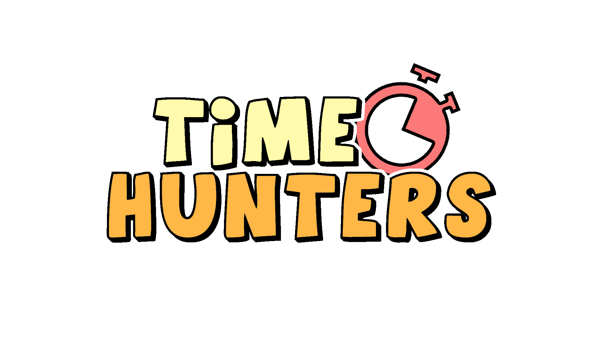
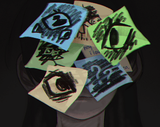
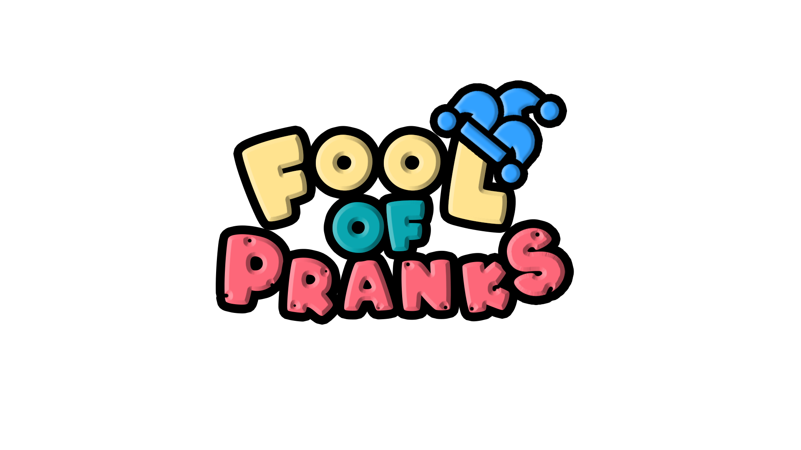

Time Hunters
It's my first game project that was fun to play. It's 3D top-down shooter for 2 player. We didn't know much about multiplayer programming so this game has only local coop for 2 players. This game was developed during ZEMJAM 2023 in just one and a half days.
I was responsible for programming and design of shooter mechanics. I really enjoyed making shooter game and one of my goals make TimeHunters 2 which will be much bigger game with multiplayer
View Time Hunters on ItchRemind
Simple 2D puzzle game that tells story about 30-years-old woman who tries to get by as a housewife diagnosed with Alzheimer's disease.
I was the only programmer in the team and I also participated in making the whole design of the game. This game is quite small, but I added it because of visual style that I'm proud of.
View Remind on ItchBeyond the Breach

Beyond the Breach is a single player 3D puzzle game that tells story of a deviant robot trying to escape free.
My first game on Steam. We were making this game for 3 month and decided to release it on Steam to learn how to work with Steamworks.SDK and how to work with community. It was a great experiment, and I'm so happy we did that.
I was responsible for all gameplay mechanics, save system and checkpoint system.
View Beyond the Breach on SteamFool of Pranks
Fool of Prank is a top-down 3D PvP game, where you prank other players using items around you.
I'm so proud of this project. We made it in just 2 days for Global Game Jam 2024, and we really enjoyed this result.
I was responsible for all gameplay mechanics. Assets were bought in Unity Asset Store.
View Fool of Pranks on ItchRubi Logger
Rubi Logger is an asset for Unity Asset Store that I hope can help Unity developers with their log system. Rubi Logger provides more flexible and clean logging for Unity projects of any scale. It also supports On-Screen and In-File logging.
It started as a tool for my future projects, but I decided to make a Unity Asset to share it with others.
When I first released it price was 7$, but then I made it free because this was no demand. :(
View RubiLogger on Unity Asset Store